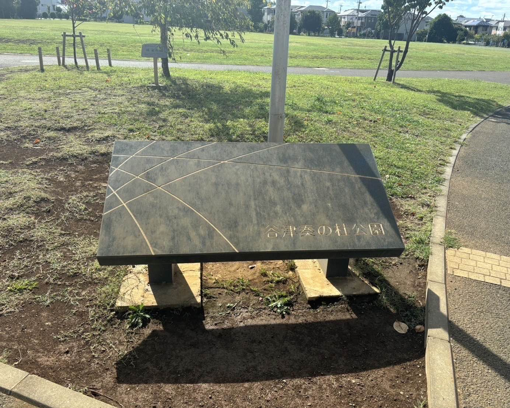
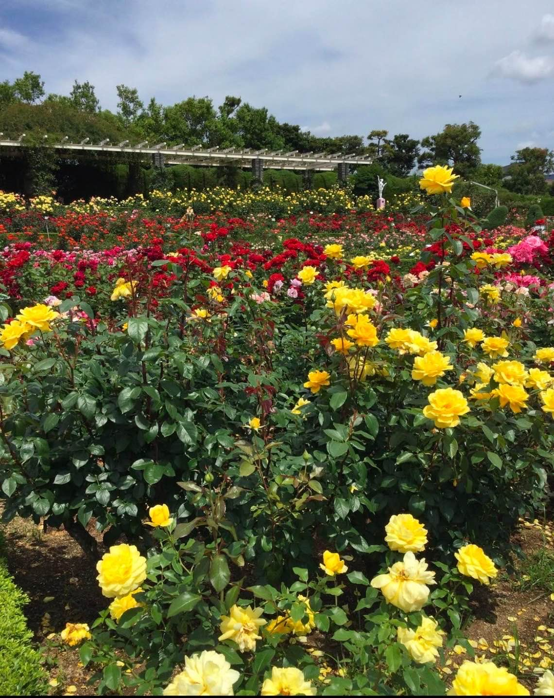

※千葉工業大学PM学科の実験用のサイトです
津田沼の名物
津田沼の名物紹介

奏の杜エリア
津田沼南側の新しい住宅エリアで、カフェや地元食材を使ったお店が多く並びます。
ピーターパンという千葉県で人気なパン屋さんがあり、焼き立てのパンが地元で人気です。また、奏の杜フォレストパークという四季折々の自然が楽しめる公園があり、友達同士や、カップルでの散歩も楽しめます。

谷津バラ園
津田沼から徒歩や電車でアクセス可能な「谷津バラ園」は、全国的にも知られるスポットです。約800品種、7000株以上のバラが咲き誇り、5月〜6月や10月の見ごろには多くの観光客が訪れます。
特に津田沼近辺で「美しい場所」として人気で、地元の名所とされています。